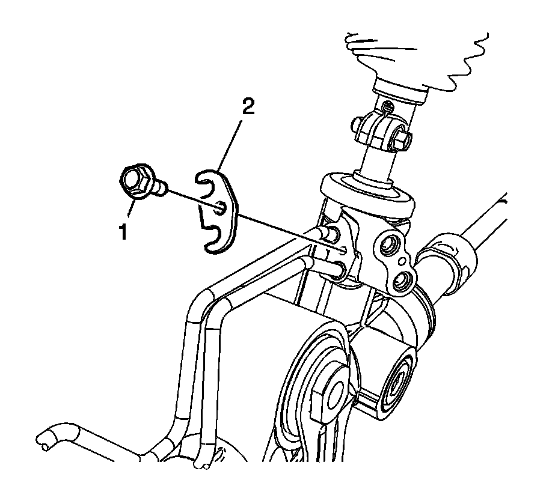
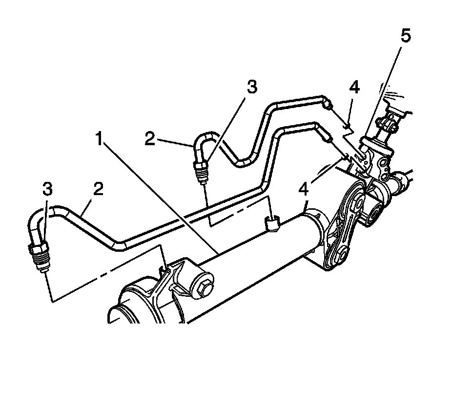
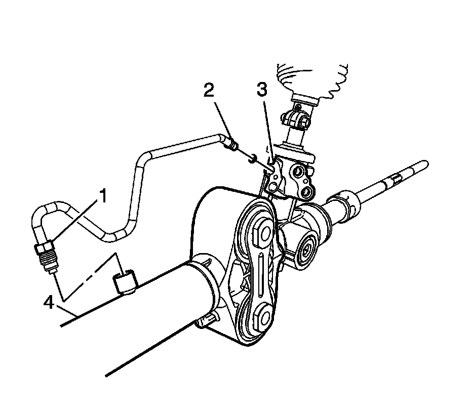
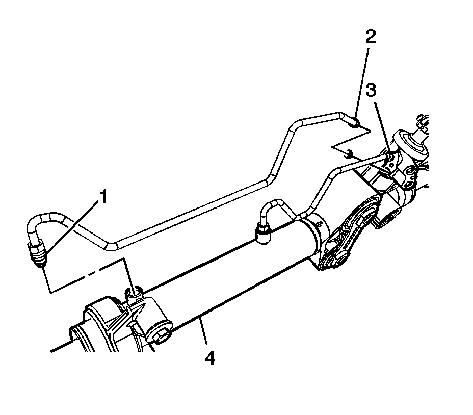

Steering Gear Cylinder Pipe Assembly and Seals Replacement - Off Vehicle
Steering Gear Cylinder Pipe Assembly and Seals Replacement - Off Vehicle
Removal Procedure

Important: Protect the boots from sharp tools and from the sharp edges of surrounding components.
1. Remove the bolt (1) from the cylinder line retaining plate (2) at the valve end.
2. Remove the cylinder line retaining plate (2).

3. Loosen both cylinder line nuts (3) on cylinder end of the gear assembly (1).
4. Remove both cylinder line assemblies (2) from the rack and pinion gear assembly (1).
5. Remove and discard the O-rings seals (4) from the valve end (5).
Installation Procedure
1. Inspect the cylinder lines for the following items:
^ Cracks
^ Dents
^ Damage to the threads
2. Replace the parts as needed.
3. Lubricate and install the O-rings seals onto the cylinder lines.

Important: You must install the smaller cylinder line into the valve housing (3) first.
4. Place the smaller cylinder line (2) into the valve housing (3).
Important: Hold the smaller cylinder line (2) in place. Do not torque the cylinder line nut (1).
5. Place the other end of the cylinder line at the gear tube end (4).
Finger tighten the cylinder line nut (1) on the smaller cylinder line.

Important: You must install the larger cylinder line into the valve housing (3) first.
6. Place the larger cylinder line (2) into the valve housing (3).
Important: Hold the larger cylinder line (2) in place. Do not torque the cylinder line nut (1).
7. Place the other end of the cylinder line at the gear tube end (4).
Finger tighten the cylinder line nut (1) on the larger cylinder line.
8. Place the cylinder line retaining plate (2) over the cylinder line beads at the valve end.
Notice: Refer to Fastener Notice.
9. Install the bolt (1) into the cylinder line retaining plate (2) and tighten.
Tighten the bolt to 12 N.m (106 lb in).
10. Tighten both cylinder line nuts (3) at the cylinder end.
Tighten the nuts to 19 N.m (14 lb ft).